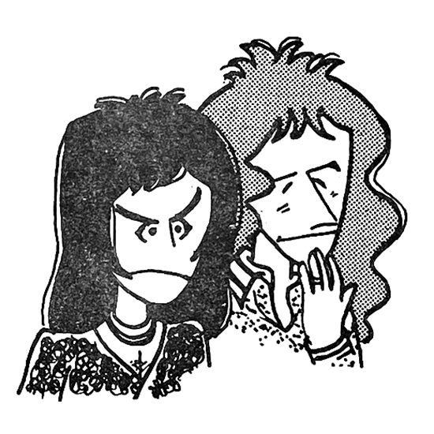
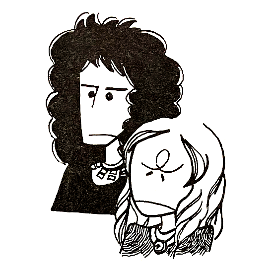
Queen on the Road
“I read the QUEEN TIMES.
You read the QUEEN TIMES.
Wanna know more about the tour of Japan??
Here it is, Vol. 4!”
April 16th (Weds)
Ikko, Mori, Little Roger, Risa, and Kathi of the Fan Club Staff were all set at Haneda Airport. Little Roger apparently even left school early in order to be there... and it was then that we all received the news: those cruel words, "Queen won't be here until tomorrow..." Little Roger said "Oh god!!" But there was nothing we could do, so we went to a coffee shop at the top of the lobby to commiserate. Suddenly we heard shrieking from the lobby, so, thinking we were there on the right day after all, we threw our half-drank coffee away and ran over.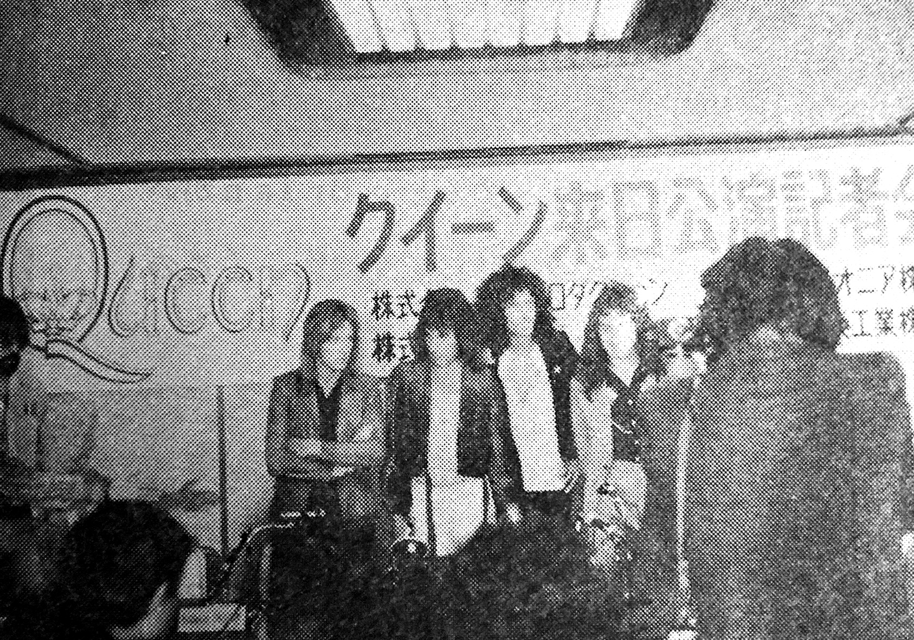
Eight of Queen's roadies appeared in the lobby. One of the roadies looked exactly like Roger, so there was a big commotion. When Little Roger yelled "AHHH it's Roger!!", Mr. Orita from Warner Music said, "You moron! Can't you even remember the faces of the people you like??" Bahaha..... everyone was embarrassed.
Mori very somberly wondered, "What will happen tomorrow when Queen REALLY arrives??"
The roadies went to the Tokyo Prince hotel by bus, but about ten taxis were chasing them, so the promoter, deciding this was a bad idea, backed out and pretended to get off at the first stop, the Empire Hotel. Since we were lodging at Tokyo Prince as well, we were a little rushed for a while but we managed. When the Fan Club said to roadie John Harris, "Freddie said you were very beautiful in that Disc article!" he laughed stupidly! (The smug bastard...)*
This was the same guy that was mistaken for Roger at the airport!
We became friendly with a roadie named Brian Spencer, also known as Nudger, while at the Tokyo Prince Bar Windsor.
*Note: This is referring to a contemporaneous Disc magazine interview with Freddie where he mentioned that John Harris was so beautiful he was going to "make him start taking ugly pills".
9:40 P.M.
At the Windsor
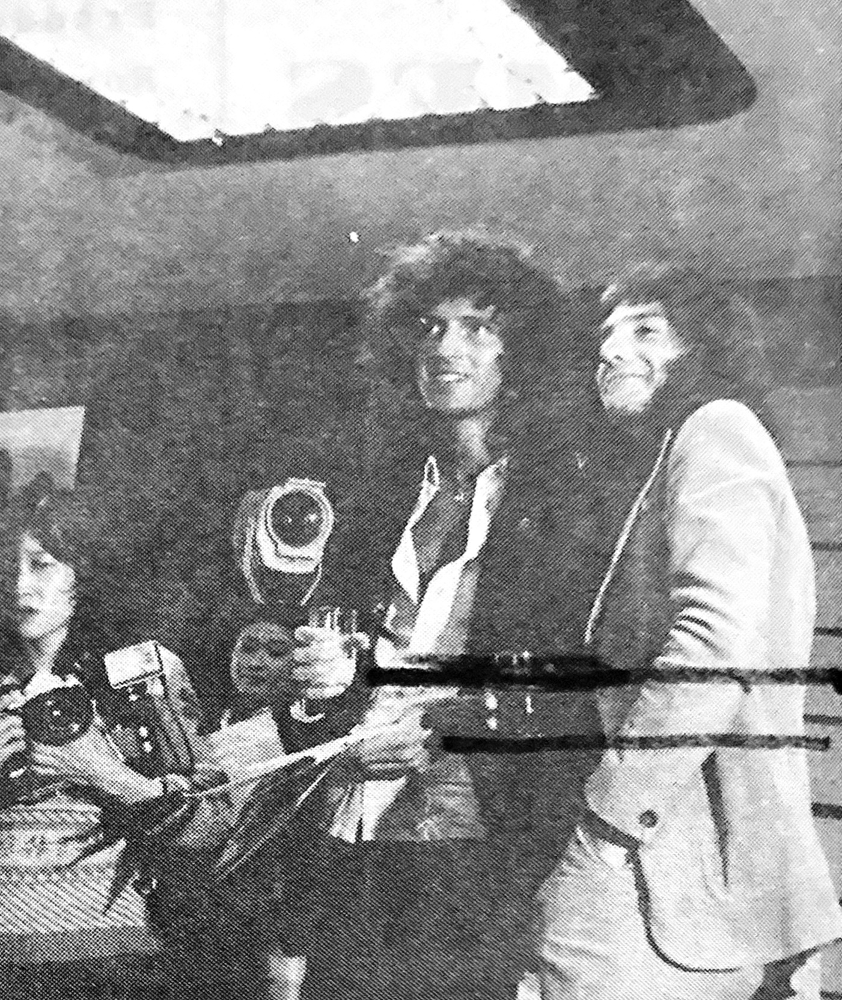
"Hey, Brian. In this 'Son and Daughter' film... you're pretty cool!" br>"Hahaha... tsugarujamisen!" [a type of shamisen and a traditional music genre]
By the way, let's introduce the roadies this time around.
Brian Spencer and Rob Johnson, stage crew.
John Harris, sound engineer.
James Dann, John Broderick, Steve Hurston, lighting crew.
Don Smith, Steve Dickerman, sound crew.
And then the tour manager, John Coray.
Another name we heard was Jack Nelson, a manager.
April 17th (Thurs)
Queen would finally arrive in Japan today.10:50 A.M.
Lord Nudger was near us in the lobby.
"Good morning!" Everyone was in a really great mood.
1:45 P.M.
We reserved some bouquets to give to Queen during their press conference, which was on the following day. Ikko & Mori were bitter-faced, since it was a private expense. (Shouldn't their parents have the most bitter faces, though?)
But they were such beautiful bouquets...
Around 6:45 P.M.
Queen arrived at Haneda, and we hired a car to go to the hotel. Because we were aware of the commotion that happened the day prior, we got there before Queen did. Oh, and our hired car was a Mercury! How about that...
Ikko & Little Roger waited at the front door of the hotel for the band, who arrived at 7:15 P.M. on the dot! They yelled "KYAAAAA ROGER!!" without thinking first. Roger and Freddie got out of the car, with Brian pulling up the rear to enter the lobby.
7:20 P.M.
When Nudger introduced the Queen F.C. to Roger, he said "Ah, I know about you guys!" and grinned. He was wearing black mascara.
Brian was chatting with the crew in the lobby.
Freddie was shaking hands and signing autographs with fans.
John was in a bad mood for some reason.
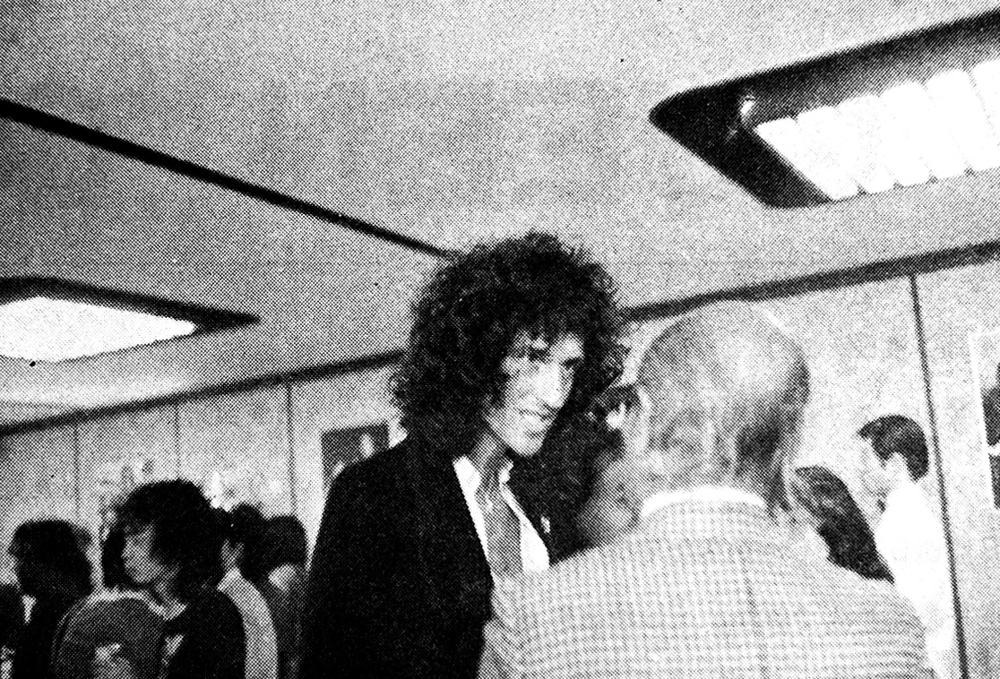
Has it really been that long?"
Two people reunited after quite a while.
We bumped into Brian on the 6th floor. Ikko & Little Roger were wandering around the 6th floor looking for the promoter's room when right there before their eyes there appeared a tall, lanky man walking towards them, his hair swaying.
F.C.: Ah, Brian!
Brian: Ahh, [in Japanese] how are...
F.C.: ...'how are'...?
Brian: ...you guys doin'?
Our legs were trembling, our faces were hot, we were a mess... Ahhh, Queen was finally here!!
April 18th (Fri)
3:45 A.M. (that is, in the middle of the night)Oh, an earthquake! We wonder if Queen is alright??
10:00 A.M.
We had a meal at the coffee house. We saw the figures of J. Harris and another roadie whose name we didn't know. J. Harris smiled and shook our hands when he saw us.
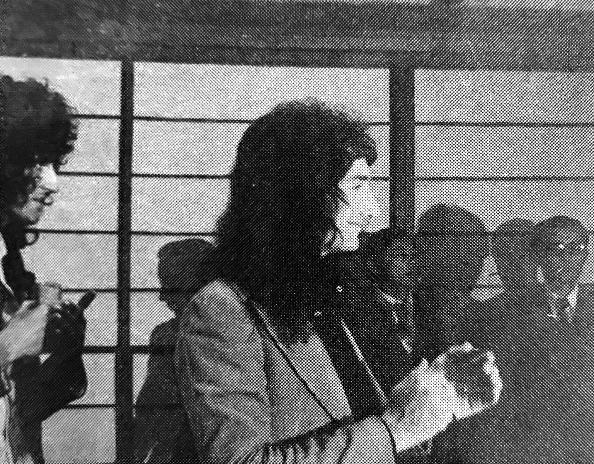
John Deacon came walking into the lobby from outside. None of the fans seemed to notice him, and when we told him that we were Fan Club staff, he just said, "Hell." [note: I'm assuming that's a typo and should be "Hello".]. (He looked somewhat surprised and smiled...)
He was wearing a brown leather coat with jeans. He also had a tote bag with him. We barely got to talk with him before the fans took notice of who he was and we were separated from him.
But, but... we were having such an important conversation...
1:20 P.M.
The press conference.
Ikko & Mori attended this. Little Roger joined them at the reception afterwards. The questions that were asked were really asinine and pointless... How did the four of you meet, Why did you choose 'Queen' as the name... etc.
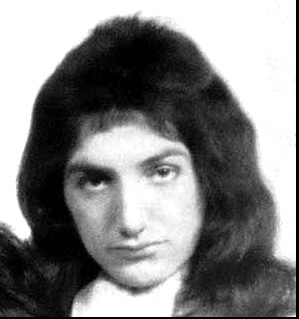
Freddie had so much confidence during the press conference that it was scary...
Roger smiled often with affection, and Brian was very conscientious..
John seemed self-conscious in front of the cameras and had the same facial expression as he did on the inner jacket of Queen II.
1:50 P.M.
The second reception began.
2:00 P.M.
They were presented with the "Most Valuable Group" award. They looked like four proud little boys accepting it.
2:05 P.M.
The bouquets from the F.C. were presented.
Ikko gave one each to Freddie and John, and Mori gave one each to Brian and Roger. (They're in the picture shown here.)
After the bouquets were handed over, as we went to get off the podium, we were told to take a commemorative photo with the group. (That picture won't be released in the Queen Times.)
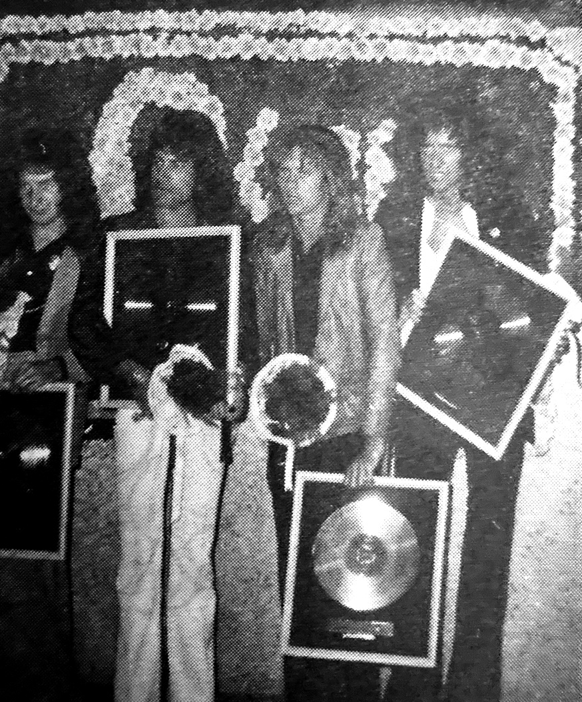
Eventually, everyone chatted at the table.
Mori chatted with Brian. Ikko & Little Roger were able to take a picture and chat with Roger. They told him that we were attending every single performance except Fukuoka, and Roger exclaimed, "You're crazy!"
Roger was eating sushi the entire time. His eyes were black and white with want as he shoveled sushi into that tiny mouth... (actually, they were blue and white!)
John was eating nonchalantly.
Freddie was watching a film of [the 1974 Rainbow performance of] "Son and Daughter" that was set up on a screen in the venue with satisfaction.
Brian was smiling amiably.
2:30 P.M.
End of the press conference.
We promised to meet Brian again in the staff room. We also told Roger "See ya later..."
Little Roger said, "Ah damnit, Roger... using mascara, double eyeliner, and drawing on your eyebrows..." while grinning. (That said, Little Roger uses mascara too...)
Around 4:00 P.M.
Risa and Kathi were chatting with Warner Music people on the 11th floor when Queen came into the Fuji room. Brian had a bamboo toy gun which he pointed at the two and said, "Bang bang!" ...and with a grin, he left.
Nudger shook Kathi's hand and Roger gave her a smile.
John seemed sullen for some reason...
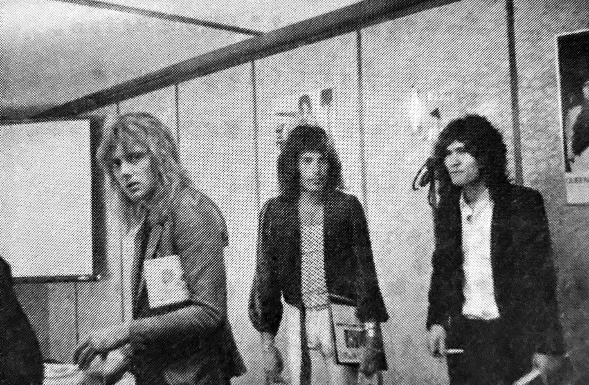
4:55 P.M.
We chatted in the promoter's room. After that, we returned to our room... (our room was on the 9th floor.)
Then as we made our way to the first floor via elevator, the manager Jack Nelson got on at the 8th floor.
Jack: Thank you for the reception!
F.C.: No problem! By the way, Brian told us we could interview him, so...
Jack: Ah yeah, okay. It's kind of hard, isn't it... taking care of all the fan club duties?
He got off at the 6th floor and we decided to follow him. Then Brian came and Jack said, "They want to interview you at 10 A.M. tomorrow morning... is that okay with you, Brian?" Brian immediately agreed.
Then Brian and the rest got on the elevator to go somewhere. We stayed on the 6th floor and chatted.
After a while, Ikko eventually decided to return to her room, so she went to the elevator and the doors opened right in front of her...
...and who should be there but Brian!
Ikko said, "Ah, Brian!" and he looked pleased and smiled at her. He looked as though he was going to exit, but the bellhop held down the button and with a loud "See you later!" the door closed and he was gone.
Shittt... that stupid bellhop...
Ahh, regardless, it was so great to run into Brian...
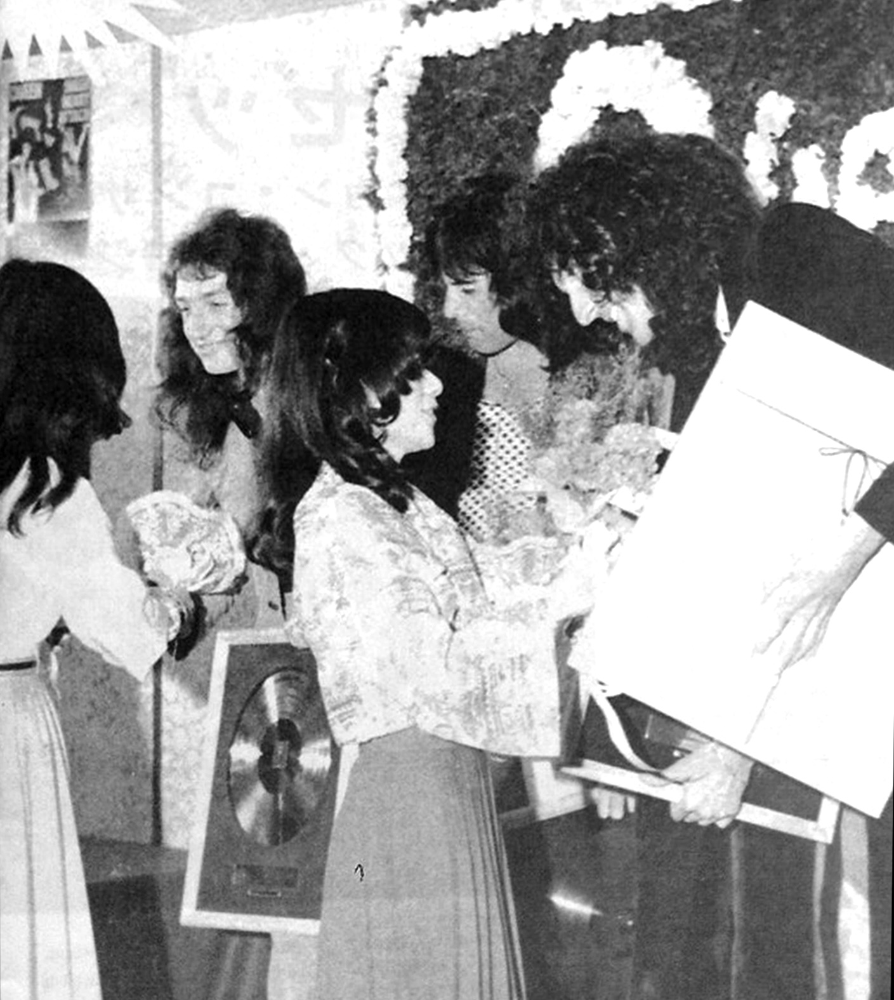
7:45 P.M.
Queen goes out to eat a Japanese meal.
9:40 P.M.
Kathi phoned us from the first floor to report that Queen had returned there. Ikko & Little Roger went to the 6th floor and Queen immediately showed up on an elevator. At some point, six or seven groupies got off an elevator (not ours!!) and surrounded Brian.
John, noticing us, said "Hi" and shook our hands happily on the way back to his room.
Freddie didn't pay much attention to us.
Roger, noticing Brian's folly, turned around and returned to his room, grinning.
Brian desperately refused the groupies and went to leave... but then he perked up when he noticed us and greeted us with "Hi!"
Brian is always so kind...
10:15 P.M.
At the Bar Windsor
Queen (minus Brian) were tastefully drinking. We were so tired but we perked up after a drink or two.
John was sitting all alone, detached, and staring at us. He didn't say a word.
April 19th (Sat)
10:15 A.M.We interviewed Brian May in a roadie's room. (For more details, see next issue of Queen Times!) [note: this interview never appeared due to Queen Times dissolving three months later]
We arrived at the room at exactly 10 A.M., and John and a roadie were standing there. We told the roadie, "We came to interview Brian, but we could come back later..."
Then exactly fifteen minutes later, the interview commenced.
Brian was wearing a black velveteen suit and a purple and black striped tee. He wore two necklaces and on his chest was a penguin brooch.
He never stopped smiling. He really is a kind person.
10:37 A.M.
John and J. Nelson came in. They began to look through vol. 3 of QUEEN TIMES. John took a look at the "Queen Best Tracks as chosen by YOU!" page, and seeing that Misfire made eighth place, smiled broadly.
Jack also had a look on his face like "Hey... it placed!" They communicated to us that it was a "good newsletter".
10:42 A.M.
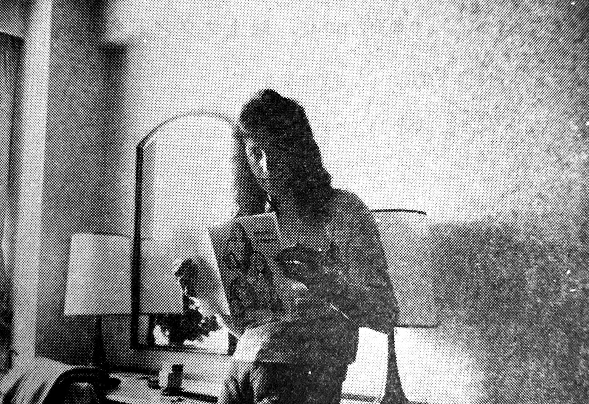
We took a pic of John while he was waiting. He said "Hang on..." and looked in the mirror, fixing his hair, and then it was "Say cheese!"
Turns out he's a fun, good-humored person after all.
10:48 A.M.
John left the room.
We showed Brian an issue of QT and he kept repeating "Amazing, amazing, heh" over and over.
Oh yeah, and Little Roger returned to his room to get a present he had brought for John before he left, and while he was gone John began fooling around with his camera and broke it!
So we wanted to get pictures of Brian, but the shutter stopped working, and we were only able to take black and white photos with Ikko's camera...
John felt so bad! It was.... adorable?
After 7:00 P.M.
Finally, the Queen gig!
Details of a different performance from the following month can be found on the "Performance Highlights" page. But here, Little Roger has a word for the rest of the fans:
"Didn't you hear Freddie telling us to sit down?? As a fan, I'm embarrassed! What did you all come to see Queen do?? Especially Mariko (last name withheld), I'm talking to you! Because of your actions, utter chaos ensued. Calm the hell down!"
The other staff members agree with this sentiment. (Little Roger was really upset!) Think about how bothersome you're being to both the band and other fans. If you stand up and make noise, we aren't able to hear the slower songs, and can't even see the band, right?! We feel sorry for those people!
Because of the chaos, Ikko lost her shoes AND her watch! Good grief...
Little Roger had his badge taken as well. We wonder how the first of May will be...
11:20 P.M.
The F.C. staff went to the Bar Windsor again.
Risa, Mori, and Little Roger returned to their rooms after a bit. Ikko & Kathi decided to stay and keep drinking. J. Harris and several people were there as well...
We drank a little too much and barely made it back to our rooms, but once we were there we began to sober up. (As can be expected...)
Kathi has a bit of a fever for J. Harris so she was shocked by the sight of the groupies hanging all over him... after that she was cry-laughing...
Risa looked troubled.
Little Roger was preoccupied writing out Queen's airline itinerary.
April 20th
4:00 P.M.Queen met fans and signed things for them in the garden of the Tokyo Prince hotel. We went along too and chatted with the promoter and people from Warner.
John saw Ikko and said "Hi!"
4:45 P.M.
Signing was over. We went back to our rooms and Queen went back to theirs.
Little Roger was gazing out our window on the 9th floor and a girl down below mistook him for the actual Roger and started waving up at him. Little Roger had no choice but to wave back...
The girl screamed and started sobbing.
8:50 P.M.
We went back to the Windsor Bar with Steve, a roadie with whom we had become chummy. He's a New Yorker and a great person. He also seems to be a fan of Freddie as well.
Kathi proposed going to Byblos [a discotheque, the first to open in Japan], but ultimately backed out.
April 21st
10:05 A.M.We bid Kathi, Risa, and Little Roger farewell.
Brian stopped by our room. He reiterated his promise that "we'll meet again" and said goodbye.
2:15 P.M.
At the Nagamori Castle Hotel.
We discovered Freddie & John in front of the first floor elevator. We greeted Nudger in passing.
After that, once we had left our luggage in the room, we ran into Brian & Roger in front of the first floor elevator. We introduced Brian to Ikko in passing and then we parted ways.
4:10 P.M.
We met Steve and Mike in the Japanese restaurant of the Castle Hotel.
4:20 P.M.
We went to the venue's reception room with the producer of World Leisure. The party had already begun on the second floor.
John noticed us and greeted us with a big grin and "Hi! How are you?"
We mingled briefly with Brian. It seems he's acquired a taste for sushi.
After that we returned to our room...
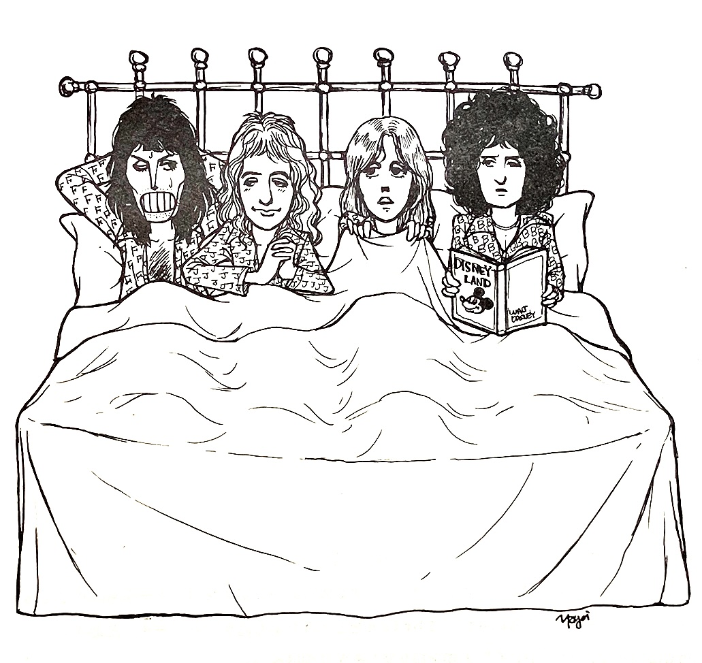
April 22nd
12:10 P.M.Brian came back from somewhere. What were the other guys doing, we wonder...
And doesn't he have anything other than black or striped suits? He's always wearing one or the other (but more often black).
1:15 P.M.
Roger left the hotel with a bodyguard and an interpreter. Was he going to tour Nagoya Castle?
1:55 P.M.
We ran into Brian in the hotel basement. He was looking at a picture postcard.
2:30 P.M.
We ran into all of Queen by chance in front of the elevator. They were on their way to a soundcheck. Freddie was looking flashy as usual, in a yellow, orange, and green-striped jacket.
Around 7:00 P.M.
CONCERT!
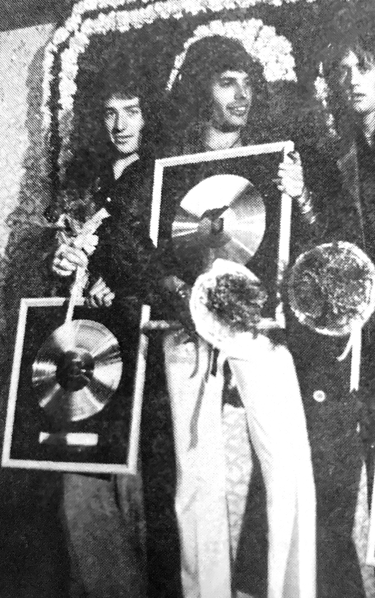
April 23rd
The Kobe performance. It was so exciting, the best concert yet!April 24th
Queen went to Kyoto. Ikko & Mori went home. They'd be away from Queen until 4/27... so lonely...April 25th
Fukuoka performanceApril 26th
OffApril 27th
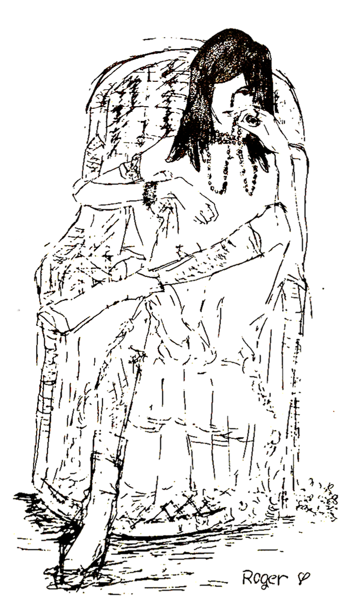
Ikko arrived at Okayama International Hotel. Since Mori hadn't arrived yet, she ended up just wandering around with nothing to do.
Steven sauntered up to the hotel entrance.
Steve: Hey! You're here now?
Ikko: Yeah, I'm waiting here for Mori!
Steve: Mori? You mean Megumi Mori?
Ikko: Yeah, that's right.
Steve: Ya mean she's not here yet??
Ikko: Nope. Remember how we taught you the Japanese word 'makesou' ['losing out']? (We had taught him this word at the Windsor Bar.)
Steve: Ah yeah, I remember, but no one taught me what it actually means!
Ikko: Ahahaha!
Around that time another roadie, Rob, faced us with a camera from about 50 meters away.
Steve: Hey Rob!
Rob started taking photos of us.
Steve: He can take photos from that far away because he has a wide lens on it...
Ikko: Here's mine...
They stood there for a while and Steve asked Ikko, "So are we planning on staying here forever?"
She replied, "Nah, let's go inside," and they headed back to the hotel.
Then who should arrive but Mori...
Finally! Ikko was relieved.
Steve wanted to go back to the room to talk so we went and chatted with him. After a while, we received a call from a person at World Leisure that Queen were in the first floor cafe terrace, so we hurried down. Unfortunately, Freddie and John were already in the process of paying the bill. John noticed us and gave us a shout out— "How are you?"
Brian remained sitting on the terrace, and he and the surrounding roadies were all gazing up. A single big black bird was dancing all over the sky.
We tried to approach Brian to hand him a present, but we were stopped by a bodyguard. Luckily, Steve noticed this situation and brought us over to Brian. Thanks, Steve!
Since Roger was closeby, we asked him if we could take a picture, but he told us "I'm in the middle of something, how about afterwards..."
Brian saw us and said, "Hi! Hello. I haven't seen much of you since we were in Tokyo. What have you been up to?"
We answered, "Well we didn't see you in Kobe, and we weren't able to attend the Fukuoka concert." Brian kept rubbing his nose and when we asked him, "Did you catch a cold?" he confirmed our suspicions by responding "A little bit. But I'm fine!"
Mori presented him with a sumi-e picture she had purchased in Nagoya. We requested him to "Please open it now!" so he undid the wrapping paper and opened up the cardboard box, his eyes widening with an expression as if to say, What do we have in here? The people surrounding him laughed as he quickly took off the lid. When he saw the picture, Brian kept repeating "Amazing!" and "Lovely!". When we explained sumi-e to him, he inquired "Where is this painted scene located?" We told him "The city of Ise... we think."
Mori bought a complete sumi-e set with this picture, complete with ink, inkstone, and brush. Brian said, "I'd like for you to show me how to use this," so we put a cup of water on the table and showed him how to mix the ink. Then he began to draw a line on the top of the box. When we showed him the brush, he inquired, "How do you say this in Japanese? How do I spell it with the Roman alphabet?" As we taught him, he wrote "Fude = brush" on the box. Then he turned the wrapping paper over and began drawing a picture. All the while, the bird from before swooped in the sky above.
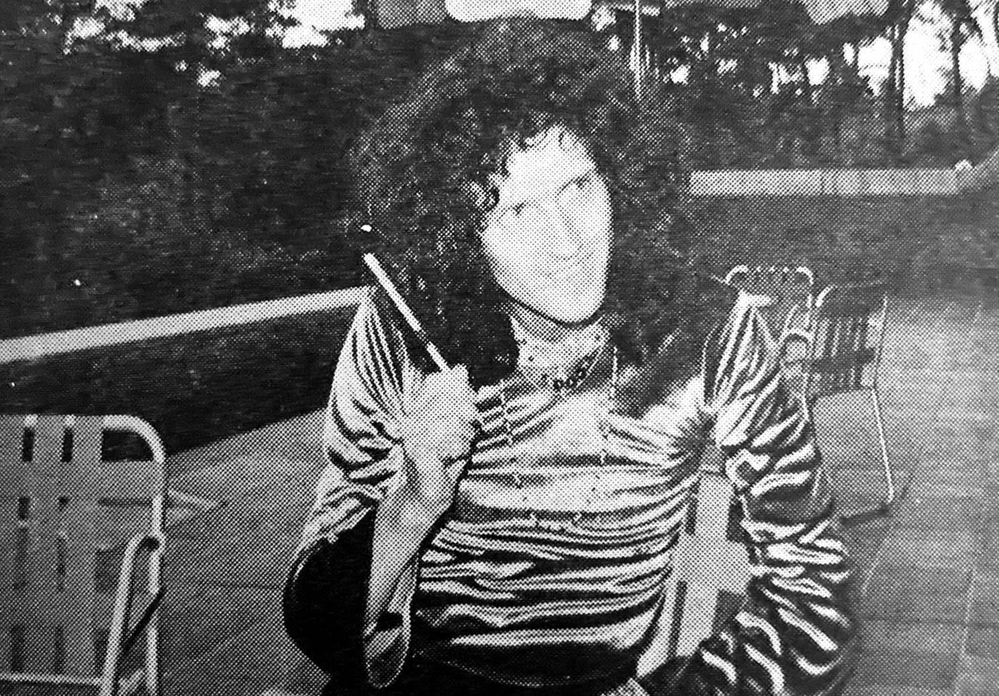
Rob was tracking the bird with his wide lens camera, and the surrounding roadies were fascinated as well. Brian, squinting up at the bird, said, "That's a really magnificent bird... is it a hawk? An eagle?" But no one knew for sure. (We suspect it was a black kite bird.)
"I like birds... my mum really loves them too... she draws them as well. It's her hobby. But I myself can't really draw." And then, we don't know why, but with the bird continually dancing in the sky above, he began drawing a candle. Since we had a camera with us, we took a photo of it with his permission.
As we leaned in to take another photo with the camera, he faced down and continued drawing. When we asked if he'd draw a guitar, he said shyly "I'm not very good at drawing... I ought to study it more... I'm really not good at it at all..." and yet began to draw the body of a guitar.
Us: This right here is the first pickup, right? And this one is the second?
Brian: That's right, and this is the bridge.
When he finished drawing the guitar, next he drew an amplifier and a cord connecting it to the guitar, and from the amp, he drew a single note! He showed it to us, laughing.
At this point, we mentioned we wanted to take a picture of Roger, and Brian said, "Well, I'm going to go show him this picture, so follow me." We went from the terrace inside to the cafe, over to where Roger was sitting with Kanazawa-san from World Leisure, and Brian began to show him his drawing.
Roger seemed a little jealous as he boyishly looked over the drawing. How adorable... we thought.
When we mentioned that we were the Fan Club, Roger said, "Ahh, I know about the Fan Club! You have a difficult job to do. Great!" We handed over a present from the Fan Club, a sensu folding fan, and he said "Is it okay to open it here?" When he opened it and saw the pattern on the inside, he yelled, "Oh! Beautiful!" Then he swished it open with one hand, covering his mouth and posing like a geisha. Where did he manage to learn that?!
We asked Brian if he could open it one-handed as well, but he couldn't do it.
Roger was pretty good at it, and he kept doing it over and over. When we asked if we could get a photo of it, he cheerfully acquiesced. Up until then he had seemed boyish, maybe even a little feminine, but the pose in the photo was very masculine. After we took the photo, he returned to swinging the fan around, having a good time.
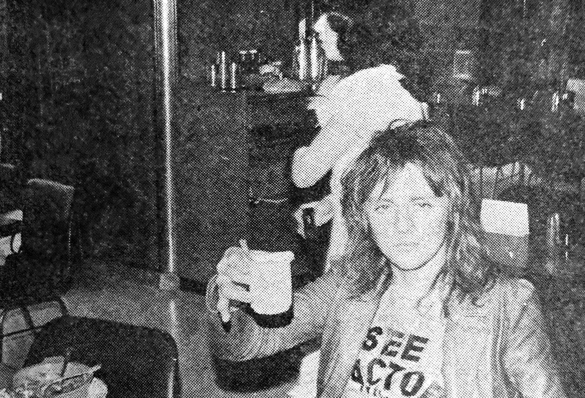
Us: Do you know about the Fan Club newsletter?
Roger: Of course! The Queen Times! I've got two volumes myself. I'm really surprised at how much work you guys put into this. Do you put out an issue every month? How much time are you spending on this Fan Club?
Us: We put out an issue every three months or so. We work on Fan Club matters every day!
Roger: Is Warner Pioneer cooperating with you?
Us: Yes they are. Roger, you look so tired...
Roger: I'm a bit tired, but I'm fine.
Us: We're really worried about your health.
Roger: I'm fine, really! So don't worry about anything. There's no need to!
He made a gesture to oppose our concern and we admired his kind demeanor.
After that, we were chatting with Kanazawa-san in Japanese for a bit, when Roger suddenly sprang up from his chair, gazing at us with those big eyes, and in a loud voice said, "HEY! What are you guys talking about?!" ...We were really surprised! When we told him "We're discussing someone else," he made an expression like "Oh, well then..." and returned to his chair.
Brian said he was going to return to his room, so we asked, "When can the Fan Club meet up with you again?" and he answered, "I don't know, maybe another time. Well... see you later."
After that, Roger was surrounded by fans in the lobby.
Afterwards we got on the elevator with him, and he had a pack of Glico Premium Caramels and a box of Seven Star cigarettes that fans had given him, looking at them in his hand with an expression of wonder.
"These are a type of Japanese candy," we told him, as his expression grew increasingly suspicious. We wonder if he enjoyed them afterwards?
Suffice it to say, this day saw us reap a big harvest. We wondered what Little Roger, a noted Roger fan, would have to say about this...
(After he heard about it, Little Roger cried: "SHIT!! I should've gone to Okayama too! AHHH ROGER!" ...Risa and Kathi both felt the same...)
Night of the 27th
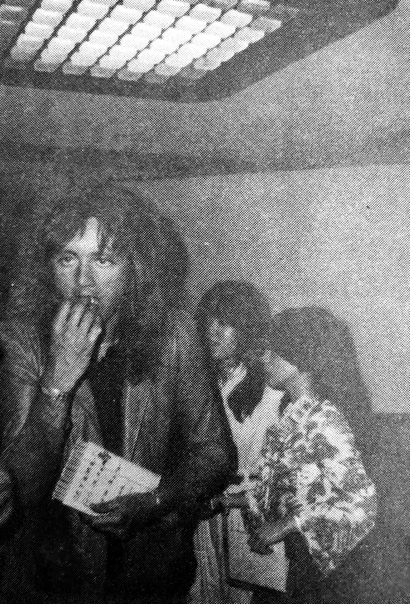
All Queen members went to a disco. [Apparently they went to a club called Gorakushima, where it is said they jammed with a Filipino band.]
We ran into Steve the roadie by chance, and at his suggestion went back to our room to chat. Here's a quick rundown of what he heard happened at the Fukuoka rehearsal:
"Freddie sang that old Kinks song, You've Really Got Me, two or three times. Roger seems to really love knocking things around, maybe because he's a drummer or something. Brian yelled 'It doesn't sound right!' and was really disgusted with everything that day. John was all by himself, grinning and keeping the pace."
Another interesting story that Steve told was that he and Roger ran out of Marlboro cigarettes, but they didn't have any more at the Okayama Hotel, so he went out into the city to find some, and he said several times how surprised he was when Japanese people kept pointing and saying "Look, Look! An American!"
So, today Roger had to smoke Seven Stars instead. (When we told this to Little Roger, he said "Wah! I wonder if I should give Seven Stars a try... but I really like Marlboros better." What would you do?)
Steve has the cheerful kindness of a New Yorker. He said goodnight and left the room. This was around midnight. Ikko went to meet Queen in the lobby when they returned to the hotel. Brian came up to her and said, "I can't come see you all tonight, gomen ne... how about tomorrow morning?"
Ikko said O.K. and left smiling.
April 28th
When we went to the lobby around 1 P.M., Freddie, Roger, and John were in the middle of a meal at the cafe. Roger and Freddie were leaning in close, conversing. Their bodyguards were seated a bit behind them, also having a meal. Freddie and I coincidentally made eye contact, and I couldn't help but gaze at him. After that, Roger left and returned to the lobby, and Brian took his seat. Apparently all four of them had just woken up, so we guess this was both lunch and breakfast.After 1:30, we went to go visit relatives of Ikko who live near the hotel and ended up staying for nearly an hour. One of the relatives was a girl who is also a huge fan of Hiromi Goh, and spent nearly 600,000 yen chasing after her together with us last year...
Ahhh... the headaches these darn kids cause their parents...
At around 2 P.M., as we returned to the hotel entrance, Queen were just leaving in their limo to head to rehearsal. After lunch, the two of us went back to our room to begin tackling some Fan Club business: the Fan Club organization chart and a draft of our presentation. All for Queen.
Around 4:45 P.M.
Once Ikko finished up her Fan Club organization chart she began wandering around the room. Mori was getting irritated with the lack of skill apparent in her presentation. Just then, there was a knock at the door. Ikko opened it and yelped to see Brian standing there with an amused look on his face.
Mori thought that room service had come, so she was shocked to see that it was actually Brian. We let him in and he said, "I'm so sorry I couldn't meet with you last night nor this morning! Will you go down and have something to eat with me?" He had a look of apology on his face.
We were caught off-guard and unprepared. But of course we just said, "Could you please wait one moment?" and hurried to get organized and go down to the cafe on the first floor.
As always, he wore a black suit with a white dress shirt, and he also had that scarf tied around his neck that we've all seen in so many pictures, the multicolored one. He had his penguin brooch on his left lapel like always, and under that he had added a badge that spells "Love". He saw us peering at the white penguin brooch on his right lapel—we hadn't seen that one before. "It's new," he explained.
As soon as we got down to the cafe, Brian apologized to us again, and we really felt quite humbled. We did our best to tell him "Please, don't worry about it." It was already after 5 P.M. when the menu arrived and since he had to go back to the venue soon, we asked the waiter to please tell the kitchen to cook fast. No sooner had we let the waiter know the situation when Brian ordered a time-consuming gratin. Of course the waiter said, "But... that'll take an extra 10-15 minutes..." We told Brian that "We recommend the pilaf!"
"...Pilaf?" He eyed us suspiciously, but he did order it. After the food, we didn't have much time left so we ordered juice.
Our interview with Brian went as follows:
F.C.: Is it fair to say that your song, She Makes Me, is a love song?
Brian: Ahh... yes. It's a love song, more or less.
F.C.: What area of London do you reside in?
Brian: Kensington.
F.C.: With your parents?
Brian: No....
F.C.: Has the Japanese audience made any particular impression on you?
Brian: We love the Japanese audience. There's so enthusiastic, so friendly, and so empathetic. They're very good. I'm really happy we've come to Japan.
F.C.: You have an interest in cameras, right?
Brian: Yeah. I bought some when we were in Tokyo the other day! It's really a hobby of mine.
F.C.: Are you still studying astronomy?
Brian: Now? Yes... but I don't think I'm going to have time for it much longer. Yeah, I have no time. It's really too bad. But I just don't have the time anymore.
At that point, someone from World Leisure came and announced that it was almost time to leave. Brian noticed an extremely small cassette recorder that we had put on top of the table and murmured, "Look how small it is! Nice! That's really neat." When we parted ways at the elevator, we gave him our words of thanks and he smiled and thanked us back.
That night was the concert. Two hours of fun.
April 29th
Ikko headed off to Shizuoka, but she and Mori missed the shinkansen and didn't make it to the venue in time.Lodging was at the New Grand in Yokohama.
Little Roger's narrative is as follows:
Today was the show in Shizuoka. It was four of us: me, my two sisters, and Risa. Shizuoka is unexpectedly far away, isn't it? We arrived at a lonely station out in Kakegawa. Without thinking, Risa said "Mama..."
That's the lonely thing about being a loving wife... [note: I'm sorry, I don't know what that means or refers to.]
At first we were worried like, "Are they really going to put on a concert this deep in the backwoods?!" But as we got closer to the exhibition hall we heard them rehearsing Now I'm Here, so we felt relieved.
7:10 P.M. rolled around and the concert began. The third or fourth song was White Queen and as the intro began, John started acting a little odd. He was all alone, looking downwards and smirking. Then he'd look up at Roger and giggle and smirk some more... it was a little strange, to be honest.
And once everyone was onstage, someone threw a chair in that direction. Luckily it didn't make it to the stage, but John glared intensely at the direction the chair was thrown from!
Hey! John's a badass!
Since we were on the aisle and we wanted to avoid being singled out by security, we were sitting patiently, but as soon as Freddie shouted "Stand up!" Risa and I jumped up and yelled "KYAAAA~!" John was able to see us now.
(I bet I had a frantic look on my face.)
Then I noticed the only ones standing in the front were Risa and I.
We wanted to stay til the very end, but since we couldn't miss the last train, we had to leave after shouting for an encore. The encore was Big Spender, Modern Times Rock'n'Roll, etc, stuff that I bet blew everybody's hair back... (this concludes Little Roger's narrative.)
April 30th
After 12 P.M., while we were in the cafe eating lunch, we looked out at the window and saw Freddie and John getting out of a taxi. Freddie had on a stylish yellow and black striped blouse and white slacks. John had on jeans and a tee shirt. They had gone out with bodyguards in order to find something to wear to the venue on May 1st, but hadn't found anything they liked.This is what Kathi has to say:
On the day of the Yokohama performance, Little Roger and Risa were supposed to meet up with me at Tokyo station. I waited for them for 25 minutes but they never showed, so I had no choice but to leave without them.
This is what Little Roger has to say:
Finally, the time for two more Japanese performances had come. Risa and I were quite late and entered during the second song. (Ikko wasn't very happy with us...) I didn't want to ignore that fact, but since there was an angry security guard right in front of us, I just sat down. This was during Stone Cold Crazy.
Several people tried to get in front of me but I fought them off so I could hear everything until the end. (Seeing this was something else! Little Roger swinging those long limbs around, looking those girls dead in the eye and braying "MORONS!" —Ikko)
That night, Ikko & Mori met up with Little Roger and the gang for the first time in quite a while...
Ah! It had already been ten days since we had last seen each other.
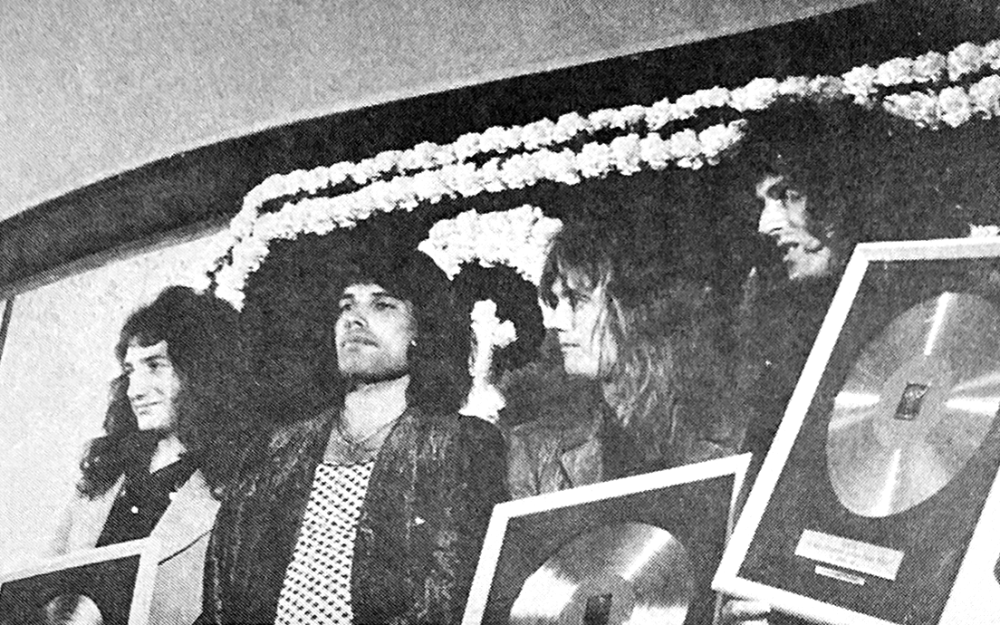
May 1st, Tokyo
We the Queen F.C. received an invitation to meet Oda, Chief Exec of Warner Pioneer, for the second time at 10 o'clock.Earlier that evening, all five F.C. staff members took in the concert. Little Roger and Kathi were kind enough to write a bit about that, so here we go:
First, from Kathi:
Right after school was out, I went to the Budoukan. I couldn't find Ikko and the others and after searching high and low, found them together with Steve. Steve saw me and said, "Oh, Kathi!" and gave me a kiss. I was embarrassed that the surrounding people saw that.
Because the concert began late, everyone was getting really excited. Kamayatsu Hiroshi and Mark from the band Garo were sitting in the first floor south stands. Everyone was even more excited about that than they were about Queen.
Now, from Little Roger:
This was the day of Queen's last performance in Japan. Ah, is it really going to be another year until we can see Queen again? (Well, for me anyways.)
The performance was supposed to begin at 6:30 but time stretched on and before long it was 7:30. The announcer said, "Those who stand will be asked to leave!" I applauded that announcement without even thinking twice.
Procession began, then Now I'm Here. One by one the songs came to an end. Right before Keep Yourself Alive, Freddie told us to "Stand up!" but since the powers that be told the F.C. staff not to stand, I stayed sitting down. But I was so enthralled to listen to the music that I couldn't really move a muscle anyhow.
For the second encore, Freddie, John, and Brian wore kimono. I lost my mind when I caught Roger's thrown scarf!!
(Little Roger went nuts at this point! Yelling "Roger! Roger! Gyaaaa~!" and holding onto the scarf for dear life... I didn't care for it... it was unbecoming of a man...
—Ikko)
After that the stage lights went on, and we knew it was really the end this time. All of the F.C. staff were in tears... sniff... sniff...
P.S. to Mariko (last name withheld), yes YOU who were screaming how you HAD TO HAVE a carnation that Freddie threw... between that and the way you behaved on the 19th, I'm at a loss for words. Your behavior is truly disgusting. (This ends Little Roger's POV.)
Sometime after 11:00 P.M.
Before Mori returned to the Tokyo Prince hotel, she was standing at the taxi platform seeing Kathi off, and Brian and Roger came out of a side door and got into a waiting taxi. Freddie and John headed toward Byblos in a taxi with a bodyguard. One more taxi full of fans chased after them.
The following day, we were talking with a bodyguard and according to him, all members of Queen are insanely serious about what they're doing; they only went out to drink about four nights for the entire two weeks they were here, and they never drank very much. On top of that, girl fans followed them everywhere they went but the band would never hang out with any of them.
Queen said, "We're not in Japan to spend time with girls, we came here to perform," and asked the bodyguards to keep the girls at arm's length.
May 2nd
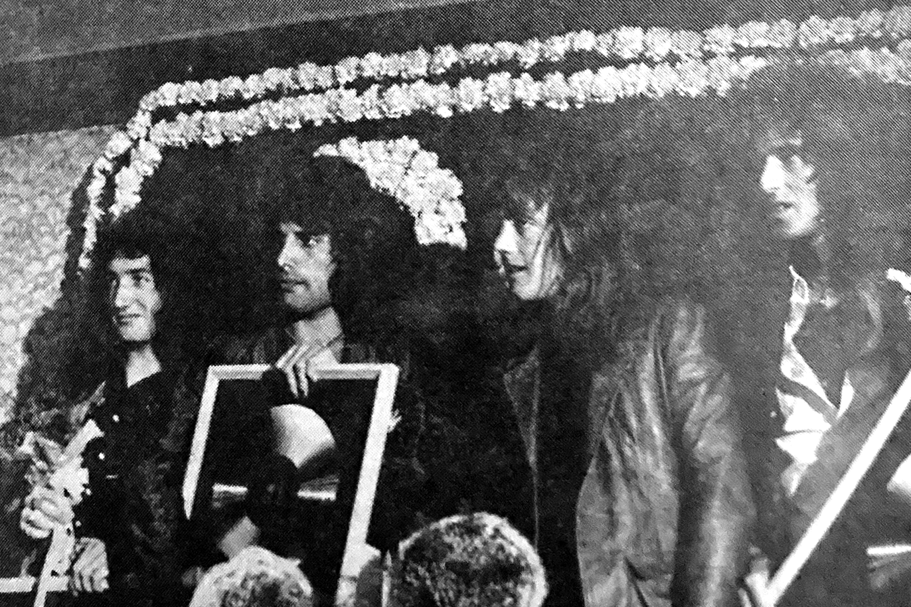
Tokyo Prince hotel lobby
After Imaizumi Hiroshi-san finished recording an episode of [the radio request show] "Young Echo" on NHK, he came to see us and chat about Queen. Roger, Brian, and John returned from a shopping trip. Freddie came back last.
6:30 P.M.
We were given the chance by the people at World Leisure to have the F.C. be formally introduced and give gifts to the band, but only two of us were allowed to go. So we headed towards Queen's room on the 8th floor.
First, we saw Freddie in the room grooming himself in front of the mirror. As we were introduced to him, he kept nodding his head so many times, and answered us in such a gentlemanly and polite manner with words of thanks. Next, John was standing in the hallway—with an amused expression of surprise on his face, he thanked us sincerely for our gratitude. His smile never fell the entire time.
Next was Brian. We had brought him another sensu fan and a necklace that Ikko was wearing. The necklace was relatively cheap but it had a really neat design, like something beautiful from the Middle East. Brian's eyes got big and he said "Oooh... how beautiful!" Mori had heard that Brian liked cats so she presented him with an English translation of the Soseki Natsume novel "Wagahai ha neko de aru" ['I am a cat]. Then he told us that he would read the F.C. introduction letter we had personally handed to him in Okayama while he was on the plane home.
Last was Roger—since we had already presented him with a sensu fan in Okayama, we also gave him a fukusa cloth that we had purchased on an off day. "Too bad you guys already got me that fan [and had to get me something else]!" he said, scratching his head over and over again with his left hand. When we thanked him, he said "No, no, thank YOU!" with a serious tone and gesture. So polite and kind, Roger.
The hallway from Roger's room was filled with luggage and attendants, and we couldn't really get through. Brian's room was nearby and he was wearing the necklace Ikko had given him and admiring it in the mirror. We were able to hear him say, "Beautiful". After he left the room, there was still someone from World Leisure there, so the three of us chatted about Queen's departure time. As soon as that guy left, Brian returned and bowed to us. Then someone called him and he left for a minute, then returned again and sat in a chair.
"Since we can't get through, would it be alright if we stayed in here for a minute?" we asked him and he said "Of course! Sit over there," and pointed to the sofa. He had begun drinking orange juice, and turning to us, asked "You guys want something to drink?" We said "Oh, please don't worry about us!" but he had already opened the fridge and was peering inside. "Ah, there's only one more can of orange juice in here. Is that alright with you?" He said it with such kindness. We noticed at this point that he really has a sweet tooth. He had McVitie's Cream Biscuits and those are something even we ladies find pretty sweet. We were amazed he was able to eat those...
Brian began playing his guitar, and we requested a few things. We could only be in awe as he began playing "Doing Alright". He had the nails of a guitarist, all extremely well taken care of and kept in good condition, and we were struck by how beautiful his fingers were.
8:27 P.M.
At Haneda Airport.
Little Roger was standing before customs and shouted, "Ah, Brian!" in a loud voice. With that one exclamation, Queen began to run, 17 surprised staff members began to run, and fans gave chase—such a commotion!
After that we had no chance... the four of them left on a JAL plan at 9:45 P.M.
Staff:
Itsuko Furubayashi
Megumi Mori
Roger Johnstone
Risa Williams
Kathi Taylor
From Roger Johnstone:
At the autograph signing event on the 20th, to the girls who waved at us up on the 9th floor... it wasn't Queen waving to you, it was me... I wasn't trying to trick any of you, I swear...
I'm really sorry!